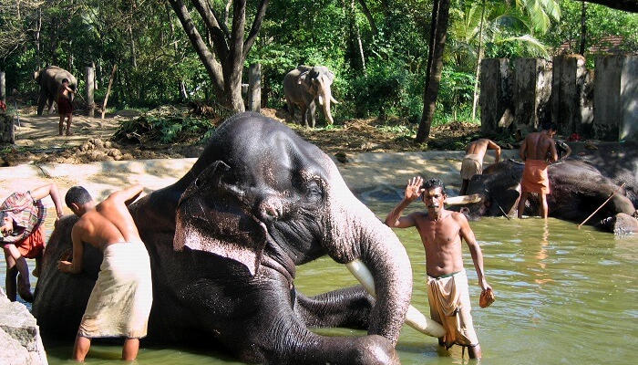

Vadakkunnathan Temple

Being the oldest and most famous temple of Lord Shiva in Kerala, Vadakkunnathan Temple is amongst the top Thrissur tourist places that you must include in your trip itinerary. The classic architecture and murals on the inside of the temple offer a perfect glimpse of the cultural side, which make it one of a kind in the city.
Shakthan Thampuran Palace

No list of best places to visit in Thrissur can ever be complete without including the Shakthan Thampuran Palace in it. Built by Raja Rama Varma IC in 1791, the palace’s Dutch-style architecture is a captivating sight to behold, especially for art admirers. Though, what makes it unique are the attractions inside it like a small museum that showcases antiquities and old relics.
Thrissur Zoo And State Museum
Located right in the heart of the city, the Thrissur Zoo & Museum is one of the best places to visit in Thrissur. While the beautiful flora and fauna in the zoo are perfect to calm the wildlife enthusiast within you, the artefacts in the museum are best to treat the history lover in you. Timings: Open on all days of the week from 10:00 AM to 6:30 PM except every Monday Entry Fees: INR 5 for adults, INR 3 for kids, INR 5 for a camera, and INR 500 for a video camera
Athirappilly Waterfalls

Located 60 km from the city, Athirapally Falls is amongst the top places to see in Thrissur. The 80 feet high and 330 feet wide falls come all the way from the Anamudi Mountains and are often called as the Niagara Falls of India. If you’re looking for a blissful escape, don’t think much and head right to this place. Timings: Open on all days from 8:00 AM to 6:00 PM Entry Fees: INR 15 per person
Guruvayur Sree Krishna Temple
Home to the historic legends, Guruvayur Sree Krishna Temple is not only one of the best places to visit in Thrissur, but also the most popular. From the architectural beauty of the temple to the minute crafts within, everything is worth witnessing, especially when lit. Timings: Open on all days of the week from 3:00 AM to 1:30 PM and 4:30 PM to 9:15 PM
Punnathur Kotta
This is a famous elephant sanctuary, which is located only 3 km away from the Guruvayoor Temple. From spotting elephants in their natural habitat to watching them do their chores, there’s a lot to do here that would keep you entertained. You can visit here right after the temple and end your evening on a sweet note. Timings: Open on all days from 9:00 AM to 5:00 PM Entry Fees: INR 10 per person and INR 25 for using a camera
Thekkinkadu Maidan
A beautiful place to visit in Thrissur, the Thekkinkadu Maidan is an oval shaped open ground, which is situated right in the middle of the city in Kerala. It is home to the Vadakkumnathan Shiva Temple and also to experiences that would make your trip a surreal extravaganza that you’d cherish for lifelong. Timings: You can visit here at any time during the day.
Chavakkad Beach

Kerala is known for its impeccable beaches, and Thrissur has its own contribution too. Famous as a wonderful spot for kids to plan their picnics, honeymooners to relax, and for others to have their own beach fun, Chavakkad Beach is a must visit in the city. The golden sand, the sound of waves crashing against the rocks, and the sunset view makes it a little paradise in the city. Timings: Open on all days of the week from 6:00 AM to 6:30 PM Entry Fees: There is no entry fee for visiting this place.
Chettuva Backwater
One of the good places to visit in Thrissur is Chettuva Backwater. The wondrous beauty and the alluring landscapes will charm your senses away. The backwaters begin from Enamakkal Lake and end into an estuary which eventually falls into the Arabian Sea. It is a world’s famous spot of mangroves trees and the exotic migratory birds. Apart from this, you can even spot several islands and a fort. It is truly a great place for nature lovers which has been declared as a heritage site by the government.